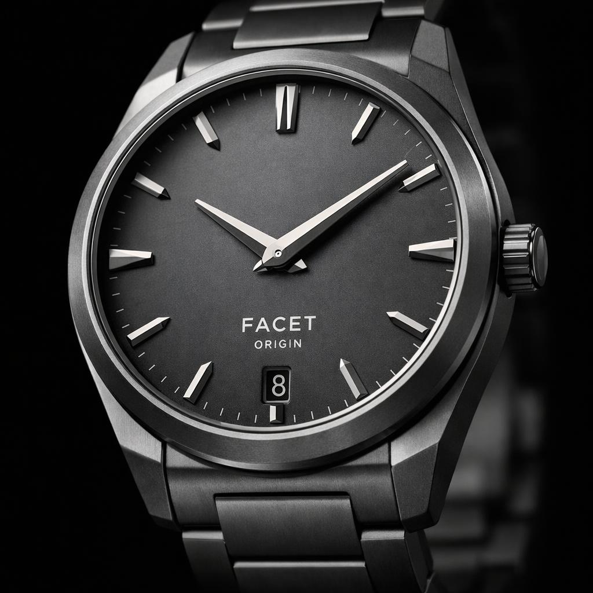

01
FACET ORIGIN
Первая огранка мануфактуры. Классический трёхстрелочный калибр в корпусе из матового титана — начало языка бренда.
- КалибрCF-01 Manufacture
- Запас хода68 часов
- КорпусТитан класса 5, Ø 39 мм